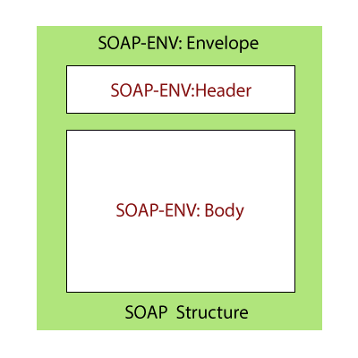

SOAP (originalmente las siglas de Simple Object Access Protocol) es un protocolo estándar que define cómo dos objetos en diferentes procesos pueden comunicarse por medio de intercambio de datos XML. Este protocolo deriva de un protocolo creado por Dave Winer en 1998, llamado XML-RPC. SOAP fue creado por Microsoft, IBM y otros. Está actualmente bajo el auspicio de la W3C. Es uno de los protocolos utilizados en los servicios Web.
SOAP es un paradigma de mensajería de una dirección sin estado, que puede ser utilizado para formar protocolos más completos según las necesidades de las aplicaciones que lo implementan. Puede formar y construir la capa base de una "pila de protocolos de web service", ofreciendo un framework de mensajería básica en el cual los web services se pueden construir. Este protocolo está basado en XML y se conforma de tres partes:
- Sobre (envelope): el cual define qué hay en el mensaje y cómo procesarlo.
- Conjunto de reglas de codificación para expresar instancias de tipos de datos.
- La Convención para representar llamadas a procedimientos y respuestas.
El protocolo SOAP tiene tres características principales:
- Extensibilidad (seguridad y WS-routing son extensiones aplicadas en el desarrollo).
- Neutralidad (bajo protocolo de transporte TCP puede ser utilizado sobre cualquier protocolo de aplicación como HTTP, SMTP o JMS).
- Independencia (permite cualquier modelo de programación).
La arquitectura SOAP está formada por varias capas de especificación: MEP (Message Exchange Patterns) para el formato del mensaje, enlaces subyacentes del protocolo de transporte, el modelo de procesamiento de mensajes, y la capa de extensibilidad del protocolo. SOAP es el sucesor de XML-RPC, a pesar de que toma el transporte y la neutralidad de la interacción, así como el envelope / header / body, de otros modelos (probablemente de WDDX).
SOAP define la forma de construir servicios web. Utilizamos el lenguaje de definición de servicio web (WSDL) para definir el formato de solicitud XML y la respuesta XML. Si usamos los servicios web SOAP, tenemos que utilizar la estructura de SOAP:

En la figura anterior, el SOAP-Envelope contiene un SOAP-Header y SOAP-Body. Contiene metainformación necesaria para identificar la solicitud, por ejemplo, autenticación, autorización, firma, etc. SOAP-Header es opcional. El SOAP-Body contiene el contenido XML real de solicitud o respuesta. En caso de error, el servidor de respuesta responde de nuevo con SOAP-Fault.
En SOAP, la definición de servicio típicamente se realiza usando el lenguaje de definición de servicio web (WSDL). WSDL define Endpoint, Todas las operaciones, estructura de solicitud y estructura de respuesta. El Endpoint es el punto de conexión donde se exponen las páginas HTML. Proporciona la información necesaria para abordar el endpoint del Servicio Web. Las operaciones son los servicios a los que se permite acceder. La estructura de la solicitud define la estructura de la solicitud, y la estructura de respuesta define la estructura de la respuesta.
PHP ofrece soporte y unas bibliotecas de apoyo habilitando la extensión SOAP en el servidor. Se ha desarrollado un gran número de librerías de terceros, que combinadas con el uso de frameworks MVC, simplifican las interfaces e implementan los escenarios de uso más habituales. También son habituales las implementaciones de clientes para servicios web públicos concretos.